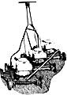

Has the peer pressure of compulsive grass-cutting neighbors got you down? Here's . . .
Like most dedicated procrastinators, I devote an inordinate amount of time to figuring out just how much work I can avoid. And when it comes to mowing the lawn, I'm probably the leading time/motion/labor expert in North America.
For instance, let's consider my neighbor Charlie. He owns a half-acre yard, which he grooms every ten days (three times a month) with a 20-inch, hand pushed power mower. Now each and every time he performs this chore, Charlie-in effect-completes an arduous fourmile trek that requires a grand total of six hours. Thus, over the course of an entire seven- to eight-month mowing season, he puts in almost a full week cutting grass. And, if we take this example to its logical extreme, we'll see that Charlie will invest something like an entire year, over the course of his life, in tending that lawn!
Well, my computations staggered me (and Charlie). Therefore, armed with statistical justification and fueled by my inherent dislike of the warm-weather chore, I considered the alternatives to wearisome hours of Saturdayafternoon grass mowing. I rejected riding mowers (too expensive) . . . "automatic" mowers such as goats (they're not likely to produce a nicely manicured yard) . . . and placing my house on stilts so I could see over the grass (my spouse thought that proposal was a bit much). Then, in a flash of insight, I recognized that the more blades of grass I have, the more blades my mower should have . . . and that the solution to my problem was a simple matter of matching taskmaker to taskmaster. Therefore, I focused my attention on designing a "gang mower", a machine that could do the work of a pack of power cutters and still fit into my budget.
The first step in bringing "Supermower" (as I dubbed my brainchild) to life was to scout out repair shops in search of a set of matching lawnmower bodies. I looked for sturdy metal decks with perpendicular wheel wells that-with some of the wheels removed-could be bolted together in a staggered series. One dealer, who took used machines in trade, donated three junked 20" Craftsman mowers that were all made from a ribbed magnesiumaluminum alloy . . . a material that yields lightweight, crack-resistant supercarriages. And as a bonus, their side chutes lacked bottom-fitted braces (for snap-on grass catchers) which tend to trap clippings and clog the openings when a mower is used in tall grass.
Back at home, I detached a total of four wheels from the decks (one from the rear of the leading mower . . . a diagonal pair, front and rear, from the middle one ... and the corresponding front wheel from the last in line) before bolting the bodies together. I then mounted a length of galvanized pipe-grooved to mesh with the ribs-in such a way that the conduit straddled all three decks. The strut served to add some rigidity to the assembly and also protected the bolted wheel wells from undue stress.
With that done, I removed the handles from the end mowers, and hacksawed braces (from the castoffs) to support the middle unit's handle. At this point I'd engineered a sturdy deck that measured a whopping 58 inches across . . . and the materials for my invention hadn't cost me a dime!
However, Phase 2 of my project-the engine-threatened to run into some bucks. I reasoned that one 8-HP powerplant would drive a threedeck rig, but I also figured I could mount three 3-HP engines-connected by belts and pulleys-for about the same cost. So that's what I did . . . and I lucked out in finding an inventory-liquidating company that offered a line of brand-new, but discontinued, 3-1/2-HP Craftsman engines for $55 apiece. Therefore, I was able to power Supermower at super-savings.
The final components necessary to make my mighty machine work-ready were cutting blades. For each engine I bought a blade, a 2-1/2" SAE bolt and lock washer, two cast-iron flanges, and two knurls for a snug fit. That hardware completed the monster mower. (After getting some cutting experience, I decided to use a pair of blades for each mower, mounted at cross angles. The added weights functioned as flywheels, to increase the lugging power of the engines, allowing them to cut efficiently at slower speeds.)
Supermower's maiden run proved the invention to be a success. It cut like a walrusjawed shark, leaving in its wake a satisfying, almost five-foot-wide swath of mown grass. I'd had apprehensions about the massive machine's weight (140 pounds) . . . but my qualms disappeared after I learned that a conventional 20inch push mower, equipped with a full bag of grass clippings, tops in at 100 pounds. In any event, my misgivings were quickly dispelled: I found I could guide Supermower quite easily as it rumbled purposefully across my lawn.
After one outing I'd adjusted my mowing habits to the point where I could manage the triple-decker with precision. I now tackle ordinary level ground in the customary way, circling counterclockwise so that the spray of clippings falls on the trimmed grass where the prunings can't bog the blades on a new sweep. When working on knolls and embankments, I apply brute force . . . and in order to steer around corners or get out of tight spots, I've developed a series of intricate back-and-forth movements that resemble dance steps.
All in all, I probably do use more physical energy in mowing my lawn now than I did before, but the time I save is worth the extra panting. By the end of Supermower's first summer, I'd clocked some 50 hours of mowing, which represented approximately a third of the time I would otherwise have devoted to the loathsome chore . . . without any breakdowns or repair bills. And now, instead of looking forward to spending a full year of my life mowing grass, I know that my total expenditure of time on the task will amount to (only?) about four months.
|
 |
|
|